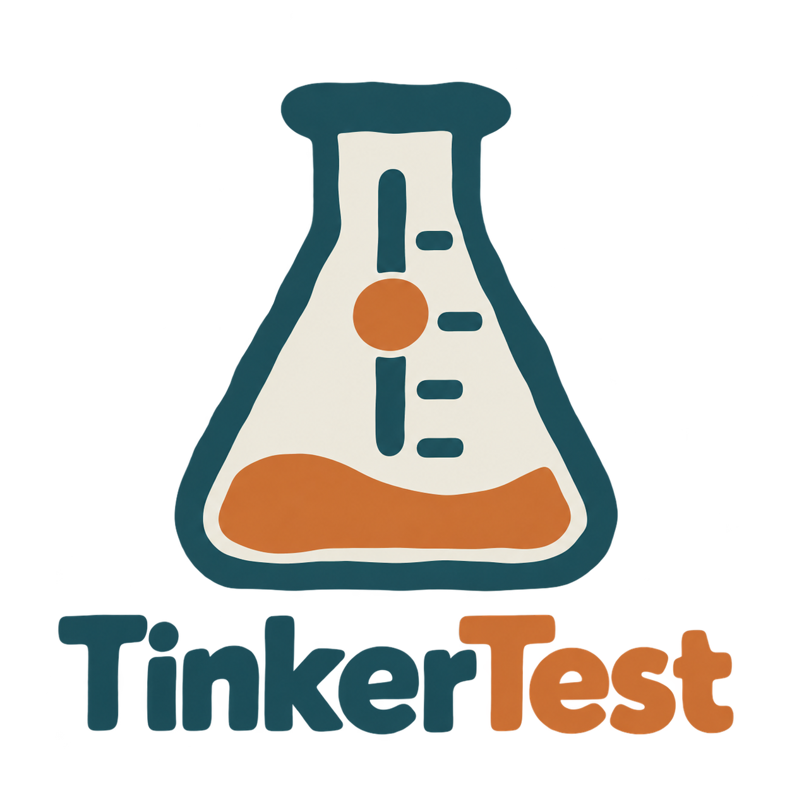
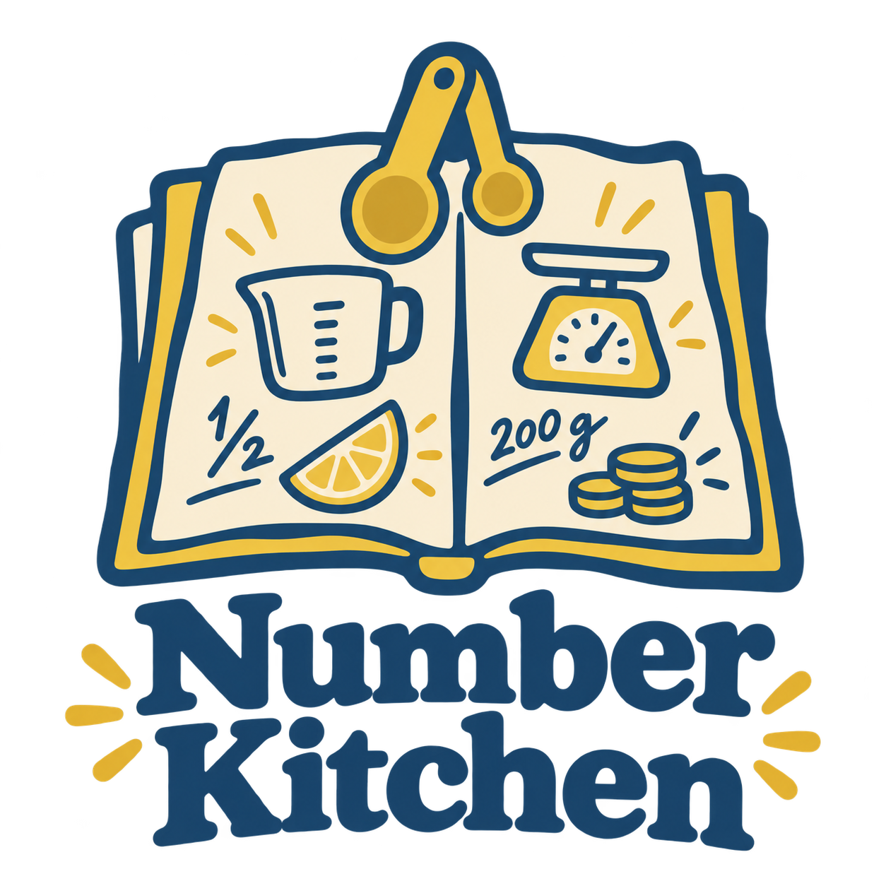
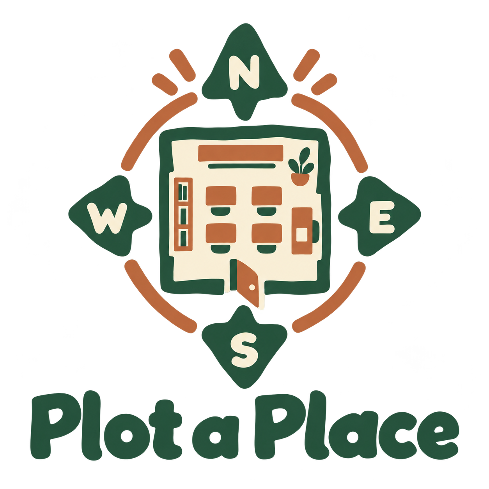

A focused explanation task could make reasoning easier to assess. The opportunity is useful prompts and review, in a well-served creation category.
In a lesson
01Model a process
0212 min: draw and explain
03Partner tests a prediction
Town Together
Years 5–9 / Humanities
Students weigh community proposals, hear different views and work within a budget in a simulated council or parliament.
Why I’m making it
I think civics is underserved by learning apps. There’s room for a substantial library of scenarios, issues and decisions that students can keep coming back to.
03 / 12
01Shade or a smoother path?↗03A service beyond the trial↗
Similar options
iCivics’ Counties Work explores local services, budgets and citizens’ needs.
Australian civic scenarios and a visible decision trail could give teachers a ready-to-run discussion with assessable reasoning.
In a lesson
01Introduce the issue
0220 min: compare and decide
03Defend a council motion
Wild Notebook
Years 5–9 / Science
Students record biodiversity, weather and water observations, compare evidence and bring their findings back to class.
Why I’m making it
I feel we’re losing the field-notebook habit. I want to bring it into the digital age, getting students outside to observe, record and explore science in real places.
04 / 12
01Weather at one spot↗02A puddle after rain↗
Similar options
Seek identifies living things and offers observation challenges.
The proposed focus is the whole investigation: a shared method, comparable records and a classroom explanation across several science topics.
In a lesson
01Agree a method
0220 min: observe outside
03Compare findings and limits

TinkerTest
Years 5–9 / Science
Students choose variables, predict outcomes and interpret virtual experiments when a physical investigation is impractical.
Why I’m making it
Physical experiments aren’t always practical or possible. I want to make them accessible through clear visual simulations, giving schools more ways to run meaningful science lessons.
05 / 12
02Keeping water warm↗03Plan a dissolving test↗
Similar options
PhET and Gizmos already support inquiry through interactive simulations.
A consistent plan–test–explain routine could make scientific reasoning easier to review. It needs a clear workflow advantage over strong existing options.
In a lesson
01Model fair testing
0215 min: plan and investigate
03Defend a conclusion

Number Kitchen
Years 1–4 / Mathematics
Students resize recipes, share portions and measure quantities in a virtual kitchen. Teachers choose the maths and difficulty.
Why I’m making it
06 / 12
01A smaller batch↗02Share the muffins↗
Similar options
Osmo Pizza Co. combines food play with arithmetic, fractions and money.
A short, repeatable retelling routine could make oral-language progress easier to hear. The value would be the teaching flow and comparison between attempts.
In a lesson
01Model a short retelling
0210 min: record and listen
03Improve one unclear part

Plot a Place
Years 1–6 / Geography
Students map classrooms, islands and neighbourhoods with symbols, directions and simple scale, then exchange navigation challenges.
Why I’m making it
I want children to understand maps by making places and testing directions with someone else.
08 / 12
01Map the reading room↗03Choose useful map symbols↗
Similar options
National Geographic MapMaker offers interactive maps, sketching and geography activities.
The proposed draw is seeing why a child chose an answer. Flexible response modes could make reasoning easier to assess when writing is a barrier.
In a lesson
01Model a text-based inference
0212 min: choose and explain clues
03Compare two possible readings
SwitchSide Stories
Foundation–Year 4 / Personal and social capability; HASS
Short school stories let children explore different perspectives and possible responses, with a teacher guiding the conversation.
Why I’m making it
Everyday disagreements offer useful learning opportunities. I want children to explore different perspectives without being pushed towards one supposedly correct response.
10 / 12
02A quiet place to work↗03A change to the game↗
Similar options
Everyday Speech offers illustrated scenarios and perspective-taking activities.